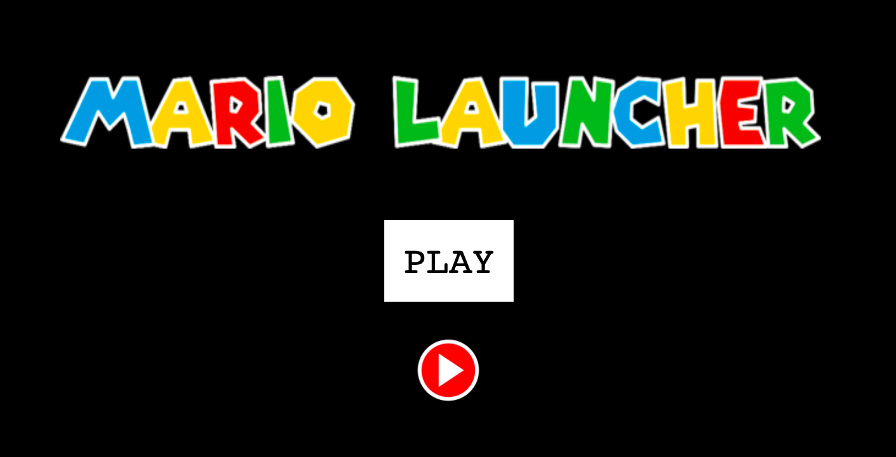
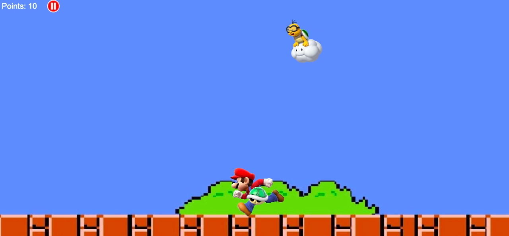
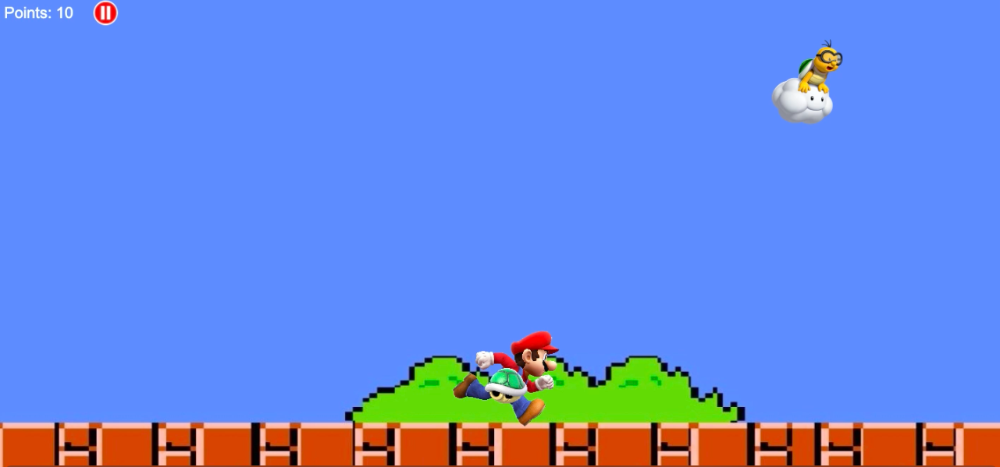
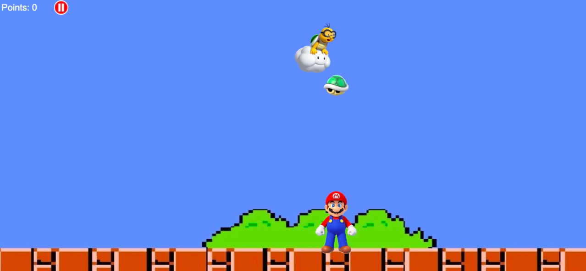
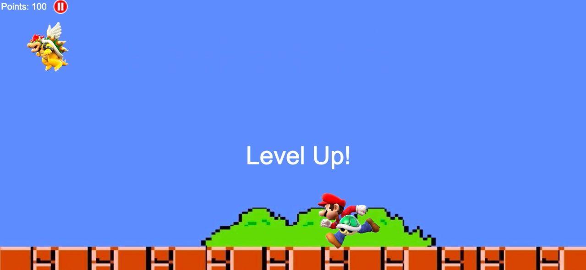
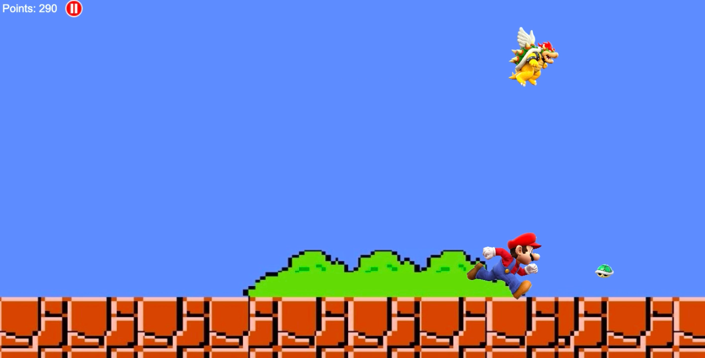
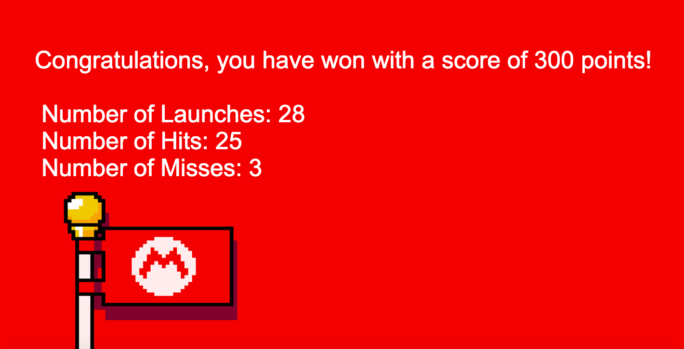

Starting Off
To start the game, click the "PLAY" button. You may also choose to turn on background music with the play/pause button directly underneath the "PLAY" button.

How to Play
Mario will be holding a turtle shell which you will have to 'launch' at the flying characters at the top of the game screen. Use the left and right arrow keys to control Mario, and use the space bar key to launch the turtle shell as shown in the images below. First you must launch the turtle shell at Lakitu, who will be flying from left to right at varying speeds at the top of the game screen. If the turtle shell hits Lakitu, you will score and recieve 10 points. However, if the turtle shell is unable to hit Lakitu, you will lose 5 points.

Mario runs left when the left arrow key is pressed.

Mario runs right when the right arrow key is pressed.

Mario launches the shell when the space bar key is pressed.
Level Up!
After 10 rounds, Lakitu will disappear and Bowser will enter, moving at a faster speed. Every time the turtle shell hits Bowser, you will recieve 15 points and the shell will become smaller. However, if the shell is unable to hit Bowser, you will lose 10 points and the shell will grow larger.

After 100 points have been scored, Bowser enters.

Mario is running to collect the shell (which has shrunk in size after many rounds) to launch it at Bowser.
Ending
After you have scored 300 or more points, the number of launches, number of hits, and number of misses will be displayed, as shown below. The aim of the game is to score 300 or more points with the least number of launches.
